英語版はこちら
© 多鹿 智哉2026
2026年度版
多鹿 智哉
| 点数 | $\le 59$ | $ 60 \text{ ～ } 69$ | $70 \text{ ～ } 79$ | $80 \text{ ～ } 89$ | $90\le$ |
| 評価 | D | C | B | A | S |
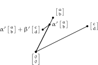
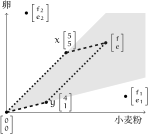
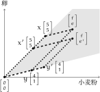
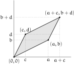
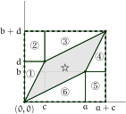
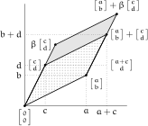
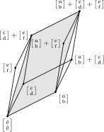
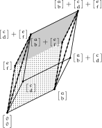
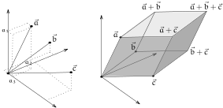
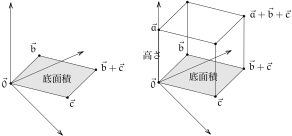
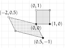
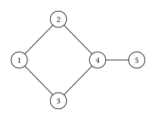
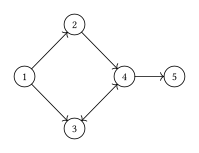
（ドラッグで回転）
次の考えの何がおかしいか考えてみましょう．
「 $g(x,y)=xy$ を $x$ で微分したら $y$ だね．ここに $y=x$ を代入すると $x$ だ．ということは $g(x,x)=x^{2}$ なので $x^{2}$ を $x$ で微分すると $x$ だ!?」
$f(x,y)=x^2-y^2$：x方向では最小，y方向では最大（ドラッグで回転）